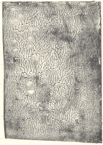

Here are two pictures from Natalie Garrett's project "Aesthetics in visual art and fractals" from the autumn 1998 Fractal Geometry class at Yale. Click the small image to magnify in a new window.
|  |
| These are prints made from fractal plates. |
| To make the plates, Natalie put a small amount of acrylic paint on a piece of gessod paper, covered this with another piece of paper, and applied pressure to flatten the layer of paint. |
| Experimental parameters included the amount of paint, the pressure applied to the paper, the time the papers were kept together before pulling them apart, and how the pieces were pulled apart. |
| To (literally) include the artist's handprint in the final images, Natalie made the prints from a plate on which she pressed down with her fingertips, |
|
| This plate, "revealed a divison between visual art and fractals by posing a question of aesthetics, objectivity and subjectivity." |
|
| "With the prints, I took the artistic process and my subjectivity a step further. I used my aesthetic judgements to try and create an emotional response. |
| "This is particularly successful in some of the more subtle prints in which the relationship between the figure and ground in the fractal forms becomes blurred. |
| "The spaces between the fractals become part of the object even though the spaces do not contain points in the given fractal. |
| "In many places, the ground and the object flip back and forth in space, so that the image functions on multiple levels. |
| "Many of the fractals do not seem to exist only on a flat plane, but within space, as a sort of landscape. |
| "The self-similarity of the fractals pulls the viewer into the image, leading the eye down various pathways and turns in the pattern. |
| "It is the explosions, in particular, that create spaces for the viewer to linger upon, before venturing out into the intricate network of pattern." |
Return to Decalcomania examples.